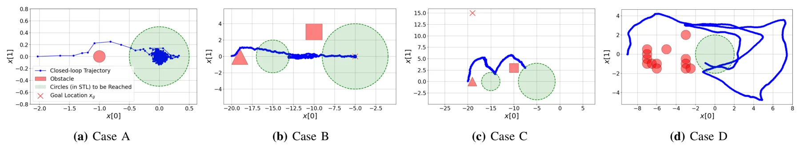
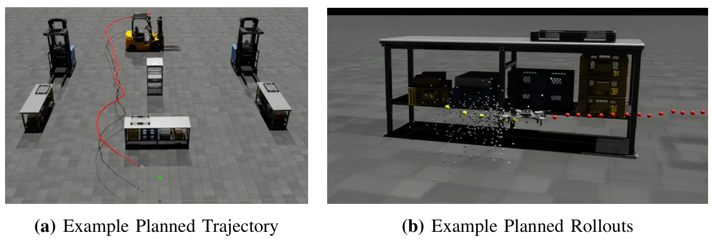
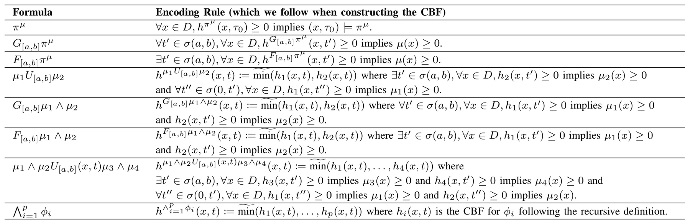
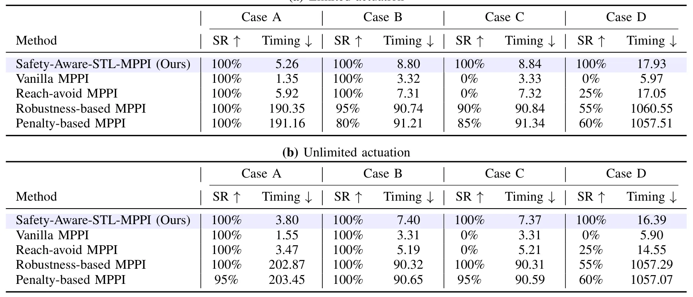

结合信号时序逻辑的安全感知 MPPI 控制Safety-aware Model Predictive Path Integral Control with Signal Temporal Logic
不是定位或建图方法，但把时序逻辑安全约束接入 MPPI，具有自主导航系统层面的工程价值。
一句话工作总结
为地图约束、任务时序和采样式控制提供统一接口，适合关注安全导航和规划—定位系统耦合的读者。
摘要
方法将离散时间 Signal Temporal Logic 公式编码为候选时变控制屏障函数，并集成到可并行采样的 Model Predictive Path Integral 控制器中。在四个火星车规划案例和 NVIDIA Isaac Lab 四旋翼实验中，作者报告了较高的安全性与效率。
Safety-aware motion planning remains a challenge in robotics, especially when missions are time-critical and are under complex specifications. In this paper, we propose safety-aware-stl-mppi, a computationally efficient sampling-based receding-horizon planning framework designed to promote satisfaction of constraints expressed in Signal Temporal Logic (STL). Our approach encodes discrete-time STL formulas into candidate time-varying control barrier functions (CBF), which are integrated into a model predictive path integral (MPPI) controller. Our method inherits the benefits of low computational cost from an efficiently parallelizable sampling based planner and utilizes CBF for constraints expressed in STL. We compare against several MPPI baselines using four artificial Mars Rover planning case studies with a diverse environment and cost setups, where we show our method consistently achieving high safety and efficiency. We show a quadcopter planning experiment with NVIDIA Isaac Lab.
中文解读摘录
- 中文名：Luce：用于三维资产生成的可重光照高斯表示
- 方向：3DGS、三维资产生成、PBR、可重光照。
- 要点：把几何与 PBR 材质统一到体素化多模态 Gaussian cloud，用 VAE 和 rectified-flow transformer 从单图生成可重光照高斯，并可导出带法线图的纹理网格；在 Toys4K 上报告 FID 较强基线提升 28%。
- 判断：本轮三维重建候选中表示链路最完整，但不是 SLAM 算法。
图表/页面预览

{kind=link}

{kind=link}

{kind=link}

{kind=link}
